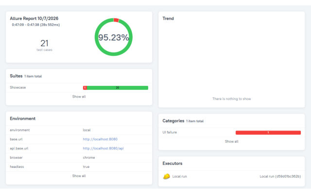

1 · Flagship

Enterprise Test Automation Framework
169 TestNG test executions from 124 test methods, all passing in the scheduled nightly run of 12 Oct 2026: API 57, UI 48, database 13, integration 9, end-to-end 2, framework unit tests 40.
UI, API and database checks of one demo shop kept in the repository; parallel execution, infrastructure-only retries, Allure evidence, Docker + Selenium Grid, nightly CI on Chrome, Firefox and Edge.